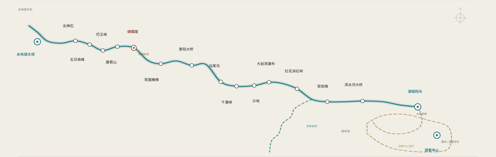

回程信息优先于阅读与收集。当前没有正式实时运营接口，因此 UNKNOWN 不显示为 OPEN。
随时可以改，也可以跳过。它只改变解释密度；路线、安全与回程规则保持一致。
必要的路线关系与 Return 参考直接内置；当前 bounded build 不冒充完整 App，也不冒充景区实时系统。
ROUTE-03 locked carrier；关系级、NTS、NOT GPS。
身份与架构沿用 v1.26/v1.27；完整 R01–R13 页面不在本 bounded build 复制。
纸图、标识、人工与景观是数字层之外的 fallback。
没有正式接口，不生成伪定位、伪倒计时或伪营业状态。
以下只用于验证 fail-closed 与数字退场行为，不代表清江当前运营状态。